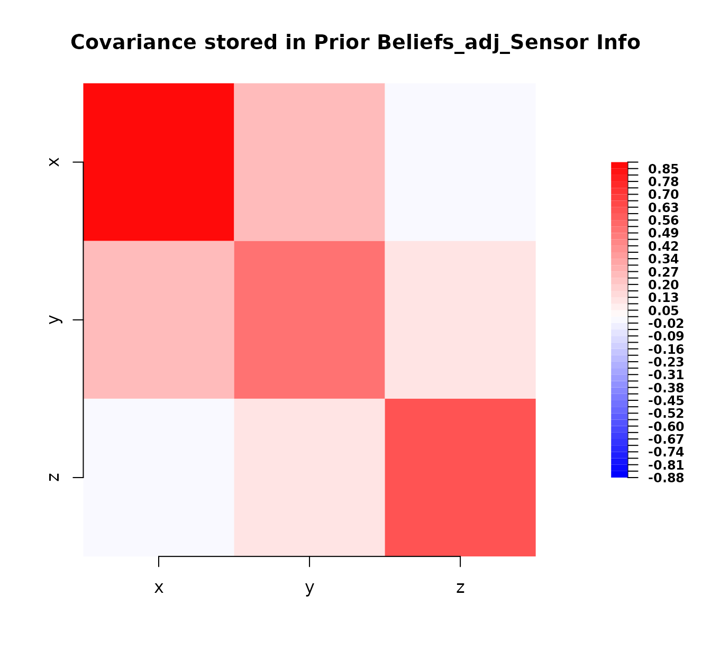

Introduction to the BayesLinearKinematics package
BayesLinearKinematics_intro.RmdThis vignette assumes a basic understanding of statistical concepts like expectation, variance, and covariance.
Introduction
The BayesLinearKinematics package provides tools for
performing Bayes linear analysis. This involves representing uncertain
beliefs about quantities using expectation and covariance, and updating
these beliefs based on observed data or other uncertain information
(kinematics). This vignette demonstrates the core workflow: defining
prior beliefs, structuring observed data, performing adjustments, and
evaluating the result.
Note that this vignette was created using R version R version 4.5.1
(2025-06-13) and the BayesLinearKinematics package version
0.2.13.
1. Defining Prior Beliefs with bl
The foundation of a Bayes linear analysis is specifying your prior
beliefs about the variables of interest. This is done using the
bl class, which stores expectations and covariances.
Let’s define prior beliefs for three variables, , and . We expect them to be 1, 2 and 3 respectively. We also specify their covariance structure.
# Define prior beliefs using the bl() constructor
bl_prior <- bl(
name = "Prior Beliefs", # A descriptive name for this belief set
varnames = c("x", "y", "z"), # Names of the variables
expectation = c(1, 2, 3), # Prior expected values E[x], E[y], E[z]
covariance = matrix(
c(
1.0, 0.5, 0.2, # Covariance matrix:
0.5, 1.0, 0.5, # [Var(x) Cov(y,x) Cov(z,x)]
0.2, 0.5, 1.0
), # [Cov(x,y) Var(y) Cov(z,y)]
nrow = 3, ncol = 3
) # [Cov(x,z) Cov(y,z) Var(z)]
)
# Print the object - uses the custom print method defined for the 'bl' class
# The 'digits' argument controls the rounding in the output
print(bl_prior, digits = 2)
#> Prior Beliefs
#>
#> Expectation:
#>
#> x 1
#> y 2
#> z 3
#>
#> Covariance:
#>
#> x y z
#> x 1.0 0.5 0.2
#> y 0.5 1.0 0.5
#> z 0.2 0.5 1.0Essentially, here, we are encoding: $$ \begin{align*} \text{E}\pmatrix{x\\y\\z} &= \pmatrix{1 \\ 2 \\ 3} \\ \text{Cov}\pmatrix{x\\y\\z} &= \pmatrix{1.0 & 0.5 & 0.2 \\ 0.5 & 1.0 & 0.5 \\ 0.2 & 0.5 & 1.0} \end{align*} $$
The print method gives a clean overview. We can also
visualise the covariance matrix using the plot method
defined for the bl class:
# Plot the covariance matrix using the S4 plot method for 'bl' objects
# This method should handle the visualization details internally.
plot(bl_prior)Plot of the prior covariance matrix.
This plot shows the strength and sign of the prior covariances between variables. Red indicates positive covariance, blue negative (though none here), and intensity relates to magnitude. The diagonal elements represent the variances.
2. Representing Observed Data with bl_data
Suppose we observe values for some of the variables. We represent
this using the bl_data class. Let’s say we observed
to be 1.1 and
to be 2.1. For ease of exposition, we will denote these two observed
variables as
(for data).
# Define observed data using the bl_data() constructor
observed_data <- bl_data(
name = "Observations", # A descriptive name for the data
varnames = c("x", "y"), # Names of the observed variables
values = c(1.1, 2.1)
) # The observed values
# Print the data object - uses the custom print method for 'bl_data'
print(observed_data)
#> Observations
#> Observed values:
#>
#> x 1.1
#> y 2.13. Adjusting Beliefs using Data (bl_adjust)
The core operation is updating our prior beliefs
(bl_prior) using the observed_data. The
bl_adjust function performs this Bayes linear adjustment
according to the standard formulae: $$
\begin{align*}
\text{E}_D\pmatrix{x\\y\\z} &= \text{E}\pmatrix{x\\y\\z} +
\text{Cov}\left[\pmatrix{x\\y\\z} ,\pmatrix{x\\y}\right]\cdot
\text{Cov}\pmatrix{x\\y}^{-1} \cdot \left[D -
\text{E}\pmatrix{x\\y}\right]\\
\text{Cov}_D\pmatrix{x\\y\\z} &= \text{Cov}\pmatrix{x\\y\\z} -
\text{Cov}\left[\pmatrix{x\\y\\z} ,\pmatrix{x\\y}\right]\cdot
\text{Cov}\pmatrix{x\\y}^{-1} \cdot \text{Cov}\left[\pmatrix{x\\y\\z}
,\pmatrix{x\\y}\right]^T.
\end{align*}
$$
# Perform the adjustment using the prior beliefs and the observed data
# x: The 'bl' object containing prior beliefs to be adjusted.
# y: The 'bl_data' object containing the observations to adjust by.
bl_adjusted_data <- bl_adjust(x = bl_prior, y = observed_data)
# Print the adjusted beliefs. Note the name is automatically generated.
# Using more digits to see the effect of the adjustment.
print(bl_adjusted_data, digits = 3)
#> Prior Beliefs_adj_Observations
#>
#> Expectation:
#>
#> x 1.100
#> y 2.100
#> z 3.047
#>
#> Covariance:
#>
#> x y z
#> x 0 0 0.000
#> y 0 0 0.000
#> z 0 0 0.747Notice how the expectations for , and have changed from their prior values (1, 2, 3) based on the observations. The covariance matrix has also been updated, reflecting reduced uncertainty (variances on the diagonal are generally smaller). Let’s plot the adjusted covariance:
# Plot the adjusted covariance matrix
plot(bl_adjusted_data)Plot of the covariance matrix after adjustment with data.
Comparing this plot to the prior covariance plot, we can see changes, particularly a reduction in the variance (diagonal elements) and potentially changes in the off-diagonal covariances, reflecting the information gained from the data.
4. Adjusting Beliefs using Kinematics (bl_adjust)
The bl_adjust function can also update one set of
beliefs (bl object, x) based on another set of
related beliefs (bl object, y). This is
sometimes referred to as Bayes linear kinematics. It uses similar
formulae but incorporates the uncertainty from the second belief object
(y).
Let’s define a second belief structure, perhaps representing information about and from another source (e.g., a different sensor or expert opinion).
# Define a second set of beliefs (e.g., from another expert or model)
bl_info <- bl(
name = "Sensor Info",
varnames = c("y", "z"), # Variables covered by this info
expectation = c(2.2, 2.8), # Expectations from this source
covariance = matrix(c(
0.5, 0.1, # Covariance structure from this source
0.1, 0.6
), nrow = 2, ncol = 2)
)
print(bl_info, digits = 2)
#> Sensor Info
#>
#> Expectation:
#>
#> y 2.2
#> z 2.8
#>
#> Covariance:
#>
#> y z
#> y 0.5 0.1
#> z 0.1 0.6Now, we adjust our original bl_prior using this
bl_info. The adjustment combines the information from both
sources.
# Perform kinematic adjustment
# x: The 'bl' object containing prior beliefs to be adjusted.
# y: The 'bl' object containing the other beliefs to adjust by.
bl_adjusted_kinematics <- bl_adjust(x = bl_prior, y = bl_info)
# Print the result of the kinematic adjustment
print(bl_adjusted_kinematics, digits = 3)
#> Prior Beliefs_adj_Sensor Info
#>
#> Expectation:
#>
#> x 1.12
#> y 2.20
#> z 2.80
#>
#> Covariance:
#>
#> x y z
#> x 0.884 0.26 0.013
#> y 0.260 0.50 0.100
#> z 0.013 0.10 0.600
# Plot the resulting covariance after kinematic adjustment
plot(bl_adjusted_kinematics)
The adjustment incorporates the information from bl_info
into the prior beliefs, updating both expectations and covariances
according to Bayes linear rules for combining uncertain information.
5. Calculating Resolution with bl_resolution
How much has our uncertainty been reduced by an adjustment? The
bl_resolution function calculates this, comparing the prior
variance to the adjusted variance for each variable:
Resolution = 1 - Var_adjusted / Var_prior. This applies
when comparing a prior bl object (x) to an
adjusted bl object (y).
Let’s calculate the resolution achieved by the data adjustment performed earlier:
# Calculate the resolution comparing the prior to the data-adjusted beliefs
# x: The 'bl' object representing prior beliefs.
# y: The 'bl' object representing adjusted beliefs.
resolution_values_data <- bl_resolution(x = bl_prior, y = bl_adjusted_data)
# Print the resolutions, rounded for clarity
print(round(resolution_values_data, 3))
#> x y z
#> 1.000 1.000 0.253A resolution close to 1 means the variance for that variable was greatly reduced by the adjustment, while a value close to 0 means the adjustment had little impact on its variance. Here, and (the observed variables) have higher resolution, indicating their variance decreased significantly. also has some resolution, reflecting the information gained about it indirectly through its covariance with and .
We can also calculate the resolution resulting from the kinematic adjustment:
# Calculate the resolution comparing the prior to the
# kinematically-adjusted beliefs
resolution_values_kinematics <- bl_resolution(x = bl_prior,
y = bl_adjusted_kinematics)
# Print the resolutions
print(round(resolution_values_kinematics, 3))
#> x y z
#> 0.116 0.500 0.400This shows the variance reduction achieved by combining the
bl_prior with bl_info.
6. Subsetting Beliefs with bl_subset
Sometimes you might want to focus on a subset of variables from a
bl or bl_data object. The
bl_subset function allows this, extracting the relevant
expectations, values, and sub-matrices of the covariance.
# Extract beliefs only for 'x' and 'z' from the data-adjusted object
# x: The 'bl' or 'bl_data' object to subset.
# varnames: A character vector of variable names to keep.
bl_subset_xz <- bl_subset(bl_adjusted_data, varnames = c("x", "z"))
print(bl_subset_xz, digits = 3)
#> Prior Beliefs_adj_Observations_extract
#>
#> Expectation:
#>
#> x 1.100
#> z 3.047
#>
#> Covariance:
#>
#> x z
#> x 0 0.000
#> z 0 0.747
# Extract data only for 'x' from the original observations
# (This is a simple case but demonstrates subsetting bl_data)
data_subset_x <- bl_subset(observed_data, varnames = "x")
print(data_subset_x)
#> Observations_extract
#> Observed values:
#>
#> x 1.1Summary
This vignette demonstrated the basic use of the
BayesLinearKinematics package:
- Create prior beliefs using
bl(). - Represent observations using
bl_data(). - Update beliefs using observations or other beliefs via
bl_adjust(). - Evaluate the information gained (variance reduction) using
bl_resolution(). - Extract subsets of variables using
bl_subset().
These tools provide a foundation for applying Bayes linear methods in
R. Remember to consult the help files (e.g., ?bl,
?bl_adjust) for further details on each function and its
arguments.